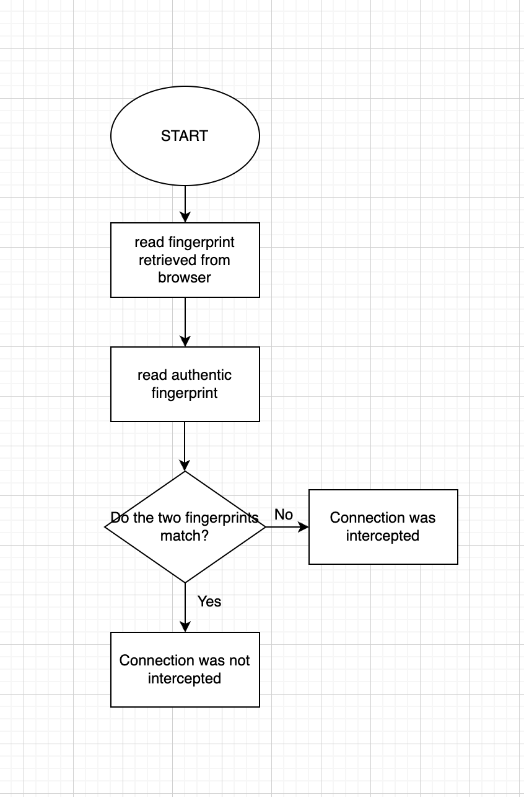

Fingerprints
Sophia P. Tran
Allen ISD STEAM Center
Advanced Computer Science II
Mr. Ben-Yaakov
August 25, 2022
Fingerprints
HTTPS, which stands for Hypertext Transfer Protocol Secure, is a combination of Hypertext Transfer Protocol (HTTP), Secure Sockets Layer (SSL), or Transport Layer Security (TLS) (The Office of the National Coordinator for Health Information Technology [ONC], 2019). A secure HTTPS connection's primary purpose is to provide a secure protocol that is encrypted using technology that no one has figured out how to decipher (Gibson Research Corporation, 2020). Furthermore, a secure HTTPS connection allows for communication and data to not transfer between web browsers or websites. Because of the advances in security, private institutions are no longer able to view their employees' and student's internet usage. This is known as HTTPS Proxy Appliances (Gibson Research Corporation, 2020).
MITM, which stands for man in the middle, is a type of attack. This is when a person places himself in the middle of an interaction between a user and an application (Imperva, 2019). This presents many risks, as this attack is done with ill intentions, typically to eavesdrop or to impersonate. As a result, from the perspective of the other party, it will seem as if it is a normal interaction (Imperva, 2019).
Cryptographic hashes are functions that are used to carefully process data and can be used to form unique fingerprints (Gibson Research Corporation, 2020). Because of this, they are very useful. Some essential qualities of a "good" hash is the ability to differentiate similar stringsand to produce highly diverse hash values for them.
Certificate authorities, also known as a CA, are entities that issue SSL certificates (TechTarget, 2021). They are used to validate contenttransmitted from web servers.
SSL interceptions cannot be prevented, but they can be detected through keys. Public and Private keys form cryptographically matched pairs.The SSL security certificates provide the Public key to the public, but the private one is never disclosed. It can only be encrypted using the certificate's public key, and the distant server can only decode data using its own corresponding private key (Gibson Research Corporation, 2020).
A false positive is when it is said to be true, but is actually false. False positives are typically a result of carelessness. A false negative is when it is said to be false, but is actually true (Teaching Science as Inquiry).
Although at times it can be helpful to view others' internet usage, schools, the government, and ISP do not have a right to eavesdrop on your communications. What you do is your own personal matter. Even though you might not have anything to hide, it is still your own privacy that others have no reason to invade.
References
Gibson Research Corporation. (2020) Fingerprints. https://www.grc.com/fingerprints.htm#top
Imperva. (2019, December 29) Man in the middle (MITM) attack https://www.imperva.com/learn/application-security/man-in-the-middle-attack-mitm
Teaching Science as inquiry. Practices of Science: False Positives and False Negatives. https://manoa.hawaii.edu/exploringourfluidearth/chemical/matter/properties-matter/practices-science-false-positives-and-false-negatives
The Office of the National Coordinator for Health Information Technology. (2019, September 10) What does "HTTPS" in a web address mean? https://www.healthit.gov/faq/what-does-https-web-address-mean
Flowchart
